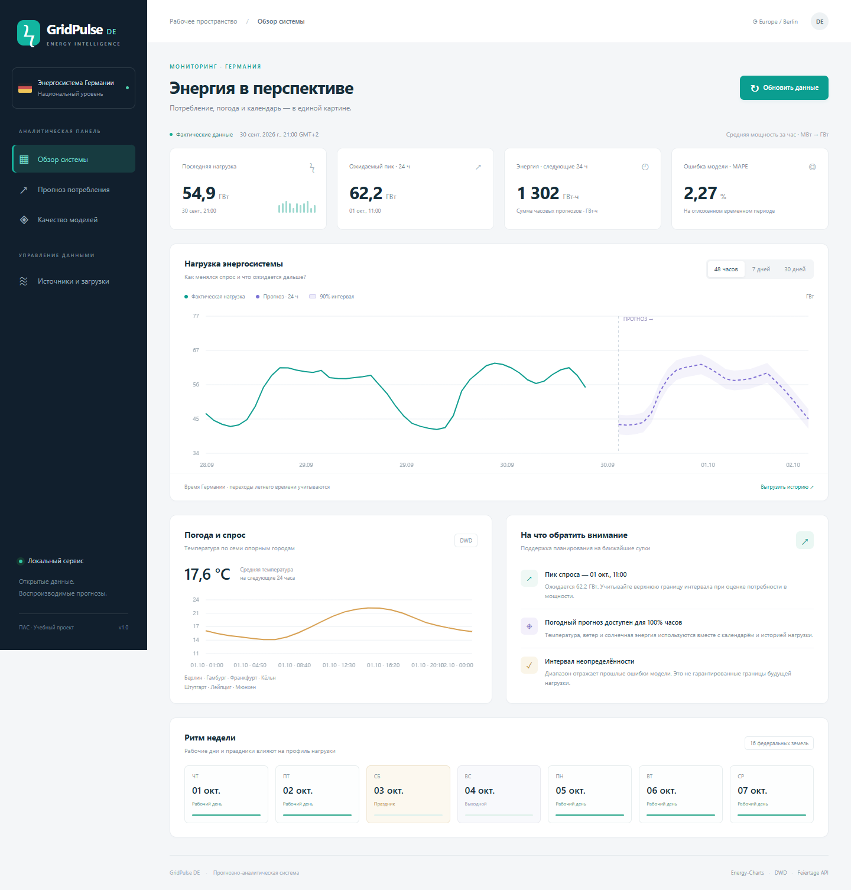

Почасовое потребление электроэнергии Германии
с учётом погоды и производственного календаря.
Оценивает будущий профиль спроса, максимальную мощность и энергию периода.
Получает прогноз на 24, 72 и 168 часов, диапазон неопределённости и погодный сценарий.
Проверяет актуальность источников, полноту и корректность измерений.
Прослеживает показатель до оригинала и видит результаты каждого запуска.
Цель: средняя мощность полного часа, МВт. В интерфейсе — ГВт; энергия периода — ГВт·ч. Реальная располагаемая генерация в прототип не входит.
История — с 2021 года. Часовой ключ — UTC, календарь и интерфейс — Europe/Berlin.
Погода усредняется по городам с равными весами. Станции наблюдений и прогнозов различаются; региональные веса требуют дальнейшего исследования.
Автоматизация: кнопка сайта, CLI и расписание каждые 6 часов.
Догрузка с перекрытием 7 дней, TTL/ETag, retry/Retry-After, карантин, атомарная запись и межпроцессная блокировка.
Нагрузка в тот же час 168 часов назад.
Прозрачная базовая модель для сравнения; при пропуске — прошлый профиль дня недели и часа.
Лаги 168/336 ч, температура, ветер, солнечная энергия, сезонность и календарь.
Нелинейные зависимости; 180 итераций, 24 листа, фиксированный seed.
Сценарий температуры ±10 °C показывает чувствительность прогноза, а не доказанный причинный эффект. Итоговая модель использует до трёх лет истории.
В данном тесте архивных прогнозов MOSMIX нет. Оценка относится к варианту с погодным профилем; доступность исторических фактов нагрузки до origin предполагается.
| Модель | MAE, МВт | RMSE, МВт | MAPE | Покрытие 90% |
|---|---|---|---|---|
| Градиентный бустинг | 1 150,43 | 1 537,27 | 2,27% | 92,56% |
| Недельный профиль | 1 496,66 | 1 960,58 | 2,92% | 92,56% |
Тест: 16.09.2026 20:00 — 30.09.2026 19:00 UTC.
На горизонте 1–24 ч базовая модель лучше по MAE: 1339 против 1398 МВт. Две недели проверки не доказывают превосходство во все сезоны. Интервал имеет номинальное покрытие и требует мониторинга.

Полнота, уникальность, диапазоны, схема, связность календаря и актуальность.
Неполный час не публикуется как измеренная полная нагрузка.
URL → оригинал с SHA → интервалы → UTC-час → витрина → экран.
История исправлений, журнал запусков, версии моделей и прогнозов.
Автотесты backend и браузерная проверка всех разделов, сценария, экспорта и мобильного интерфейса.
http://127.0.0.1:8050
Следующие шаги: проверка на нескольких сезонах, накопление погодных выпусков, взвешивание регионов и мониторинг ошибок выпущенных прогнозов.
Материалы: README, отчёт, архитектура, тесты и протокол валидации.
GitHub: RomkaBro1 / EnergyConsumptionPAS